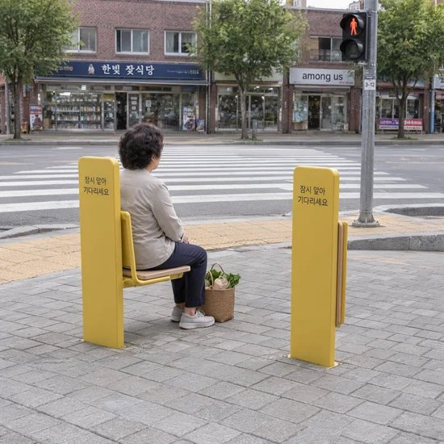

[쉼과 신체 배려]
노란 쉼표 의자
A Pause Before Crossing
건너기 전, 잠시 앉을 수 있는 자리를 더한다.
상태구상발매Vol. 1 봄호, 초고령 사회의 보행과 쉼
Problem문제
서서 신호를 기다리는 부담 때문에 몸을 기댈 곳을 찾는 사람을 위한 좌석이다. 고령자뿐 아니라 보행 중 피로를 느끼는 사람, 짐을 든 사람도 이용한다. 차도와 구분된 보도 안쪽의 여유 공간을 대상으로 하며, 실제 횡단 신호를 보면서 쉴 수 있는 방향으로 놓는다.
Design디자인
등받이처럼 보이는 좁고 긴 세로 판 앞에 한 사람이 앉는 좌판이 접혀 있다. 좌판을 내리면 작은 의자가 되고, 접으면 판과 나란해져 돌출이 줄어든다. 전체 실루엣은 세로 획에 짧은 가로 획이 붙은 형태다. 손으로 지지할 부분은 좌석 옆에 마련하고, 좌판의 움직임은 끼임과 갑작스러운 복귀를 줄이는 구조로 개발한다. 신호 기둥에 기대어 매달지 않고 별도 지지체를 사용한다.
무광 노랑 분체도장 금속 지지체와 밝은 목재색 교체형 좌판을 조합한다. 표면은 번쩍이지 않게 하고, 손이 닿는 모서리는 매끄럽게 가공한다. 치수와 지지 구조는 시제품 단계에서 조정한다.
Use and Care이용과 운영
이용자는 접힌 좌판을 내려 앉고, 옆 손잡이를 짚어 일어난다. 안내 문구는 ‘잠시 앉아 기다리세요’로 제안한다. 신호와 무관한 횡단 허용 문구는 넣지 않는다. 의자를 사용하지 않는 사람과 휠체어가 옆을 지날 공간도 함께 확보한다.
References참고 사례

퍼블릭인의 작업이 아닌 참고 사례입니다.
Results결과
아직 발매하지 않은 구상입니다. 발매하면 사전 등록한 지표와 12주 관찰 결과를 이 자리에 같은 형식으로 기록합니다.
Next다음 변화
판정(유지, 수정, 확대, 중단)과 그 이유, 다른 장소에 적용할 조건을 남깁니다.